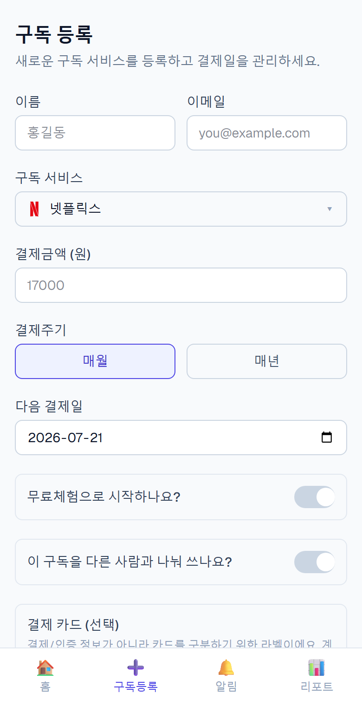
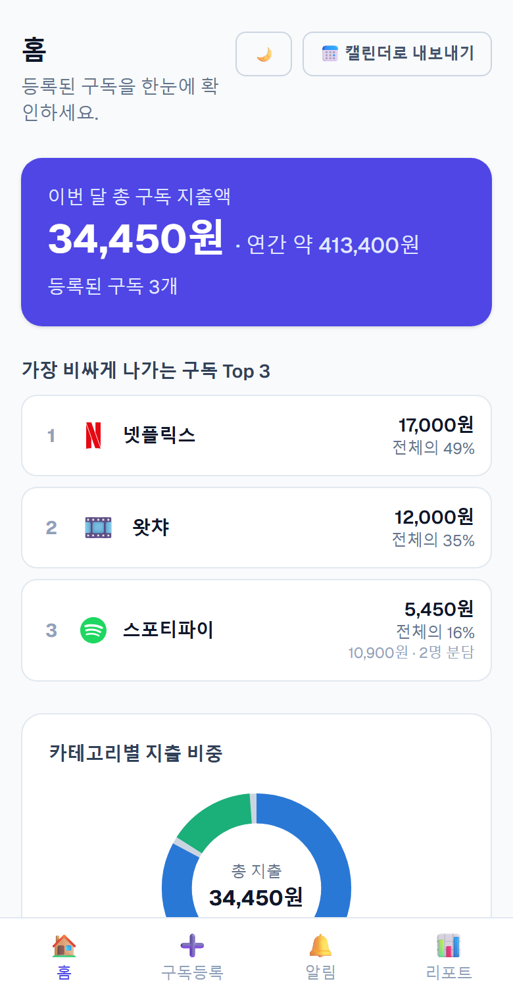
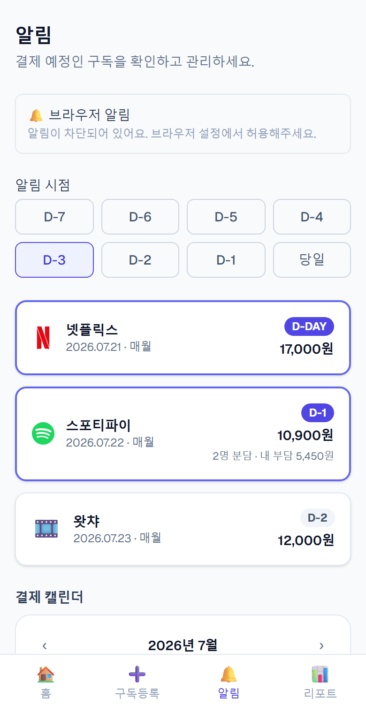

구독 매니저
놓치지 않는 구독 관리
여러 구독료가 각기 다른 날짜에 빠져나가 지출을 파악하기 어렵고, 해지 타이밍을 놓치는 당신을 위한 서비스



STEP 1
구독 등록
서비스명·금액·결제주기·다음 결제일만 입력하면 끝
STEP 2
갱신일 알림
원하는 알림 날짜를 정해 캘린더로 편하게
STEP 3
지출 대시보드
이번 달 총 지출액과 서비스별 비중을 한눈에